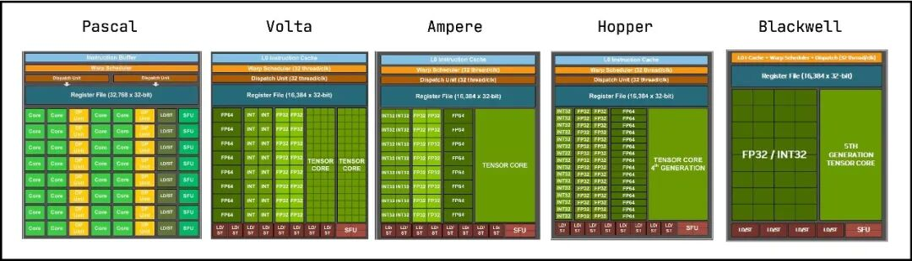

flowchart TD
subgraph MemHierarchy["GEMM 算术强度三级访存层次"]
GMEM["全局显存 HBM: 容量大 (80GB+), 带宽约 2~3 TB/s"] -->|加载分块 Tile| SMEM["共享内存 SMem: 容量中 (200KB+/SM), 带宽约 15~20 TB/s"]
SMEM -->|加载矩阵片段 Fragment| RF["寄存器文件 RF: 容量小 (~64K 寄存器/SM), 带宽高达 30+ TB/s"]
RF --> TC["Tensor Core MMA 矩阵计算单元 (最高达到 PFLOPS)"]
end
第 1 课：GPU 层级、Tensor Core 与算术强度
参考答案版：包含完整代码实现与问答题深度参考解析。建议先独立完成练习题后再展开核对。
本课目标与完成标准
学完后你应能：把 thread/warp/CTA/SM 与 CUTLASS 的 threadblock/warp/instruction tiling 对齐，并用 roofline 判断优化方向。
通过必须同时满足：
- 独立补齐本课唯一的代码填空题，并通过给定检查；
- 三个问答题均说明因果链，而不是只报术语；
- 能指出至少一个正确性边界和一个性能取舍；
- 总分不低于 8/10，且没有一票否决级概念错误。
前置关系
- 课程前置：CUDA 线程模型、GEMM、C++ 模板基础
- 本课在路线中的作用：CUTLASS 是分层组合的 GEMM/卷积模板库，CuTe 用 layout algebra 描述数据与线程映射；Tensor Core 是 warp 协作矩阵指令而非单线程单元。
核心心智模型
核心操作与执行流程图解

图 1-1：从 Volta 到 Blackwell 的 NVIDIA GPU SM 架构演进与 Tensor Core 升级
图 1-2：算术强度在 GPU 存储金字塔（GMEM-SMem-RF）中的分层复用流
1. 它是什么，解决什么问题
CUTLASS（CUDA Templates for Linear Algebra Subroutines） 是 NVIDIA 开源的高性能 CUDA C++ 模板抽象库，其 3.x 版本引入了 CuTe（C++ Layout Algebra） 体系。它专为榨干 Volta、Turing、Ampere、Ada、Hopper 以及 Blackwell 各代 GPU 的 Tensor Core 极限算力而生。
GPU 硬件的深层物理矛盾与解决之道（结合图 1-1 与图 1-2）： - 算力与显存带宽的万倍鸿沟：以 NVIDIA H100 为例，BF16 稠密矩阵算力峰值接近 \(1000 \text{ TFLOPS}\)，而 HBM3 显存带宽仅为 \(3.35 \text{ TB/s}\)。若每个乘加指令都需要从 HBM 提取操作数，硬件算力利用率将不足 1%； - 存储金字塔与分层复用（图 1-2）：GPU 拥有三级核心存储层次： 1. 全局显存（Global Memory / HBM）：容量大（80~144 GB），但延迟高（数百时钟周期）、带宽相对较窄； 2. 共享内存（Shared Memory / SRAM）：片上每 SM 拥有 100~228 KB，带宽达数十 TB/s； 3. 寄存器文件（Register File / RF）：每 SM 拥有高达 64K 个 32-bit 寄存器，带宽超过 30 TB/s，单周期零延迟直连执行单元； - 分层分块（Hierarchical Tiling）：CUTLASS 将巨大的 GEMM 问题映射到硬件层级：CTA Tile（Threadblock 级）\(\to\) Warp Tile（Warp 级）\(\to\) Instruction Tile / MMA Atom（Tensor Core 硬件指令级），通过多级缓存复用将算术强度放大数十倍。
2. 它如何工作（结合图 1-1 与图 1-2）
CUTLASS 将 GEMM \(C = A \cdot B\)（尺寸为 \(M \times N \times K\)）严格分解为三级分块流水线： 1. CTA 级分块（Threadblock Tile）： - 将输出矩阵 \(C\) 划分为 \(M_{\text{tile}} \times N_{\text{tile}}\) 的大块，由一个 Threadblock（CTA）负责； - 在收缩维度 \(K\) 上以步长 \(K_{\text{tile}}\) 循环步进。每轮循环中，CTA 内所有线程协同将 \(A\) 的 \(M_{\text{tile}} \times K_{\text{tile}}\) 分块与 \(B\) 的 \(K_{\text{tile}} \times N_{\text{tile}}\) 分块从全局显存搬运至共享内存（Shared Memory）； 2. Warp 级分块（Warp Tile）： - CTA 内部由多个 Warp（每个 Warp 32 线程）组成。每个 Warp 负责计算 CTA Tile 内的一个子区域 \(M_{\text{warp}} \times N_{\text{warp}}\)； - Warp 内的线程协同将属于该 Warp 的数据切片从 Shared Memory 加载到每个线程的私有寄存器（Register File）片段（Fragment）中； 3. 指令级分块（MMA Atom / Tensor Core Instruction）： - Tensor Core 并不是传统单线程独立的标量 ALU，而是 Warp 协同的硬件微架构矩阵乘加阵列（图 1-1）； - 单条 PTX 指令（如 Ampere 的 mma.sync.aligned.m16n8k16，Hopper 的 wgmma.mma_async）要求 Warp 内的 32 个线程各持有特定的寄存器切片，硬件在几个周期内一次性完成小矩阵（如 \(16 \times 8 \times 16\)）的点积累加。
3. 正确性条件与常见误区
- 分块几何形状的硬件兼容性：
- 顶层的 CTA Tile 尺寸必须是 Warp Tile 的整数倍，Warp Tile 必须是底层 MMA Atom 尺寸的整数倍；
- 选取的 MMA Atom 必须与目标 GPU 计算能力（Compute Capability）和数据类型严格匹配（例如 Ampere 引入了 BF16/TF32 的 \(16 \times 8 \times 16\)，Hopper 引入了基于异步 TMA 的 64-thread Warp-Group WGMMA）；
- “理论算力高”不等于“实际算子跑得快”：
- 很多开发者在没有分析 Roofline 模型的情况下，误以为使用了 Tensor Core 就必然性能暴涨；如果数据维度过小（如小 Batch Decode 阶段的 GEMV），算子瓶颈依然锁死在 HBM 显存带宽上，Tensor Core 往往处于严重饥饿闲置状态。
4. 性能与工程取舍（Roofline 模型与拐点分析）
- 算术强度与 Roofline 拐点（Ridge Point）：
- 算法的算术强度定义为：\(\text{AI} = \frac{\text{总浮点计算量 (FLOPs)}}{\text{最低显存传输字节量 (Bytes)}}\)；
- 硬件的平衡拐点（Ridge Point）为： \[I_{\text{ridge}} = \frac{P_{\text{peak}} \text{ (TFLOPS)}}{BW_{\text{peak}} \text{ (TB/s)}}\]
- 优化分水岭：
- 若 \(\text{AI} < I_{\text{ridge}}\)：算子处于 带宽受限区（Memory-Bound）。优化重点是增大分块复用度、消除中间写回（算子融合 Fusion）；
- 若 \(\text{AI} > I_{\text{ridge}}\)：算子处于 算力受限区（Compute-Bound）。优化重点是优化指令流水、隐藏 MMA 依赖停顿、提升 Tensor Core 发射饱和度。
- Tile 增大带来的双刃剑效应：
- 增大 CTA Tile 尺寸（如从 \(128 \times 128\) 增大到 \(256 \times 256\)）能显著提升数据在片上的复用率；
- 负面代价：单 Block 所需的 Shared Memory 和寄存器用量剧增，导致单 SM 上能容纳的活跃 Block 数骤降（Occupancy 崩塌）；同时，若全局矩阵总尺寸较小，过大的 Tile 会导致划分出的 Block 数量甚至小于 GPU 的 SM 总数，造成大量 SM 算力闲置（波次量化损耗 Tail Effect）。
具体演示：GEMM 理想算术强度数学解析
考虑半精度（FP16/BF16，每元素 2 字节）下尺寸为 \(M=N=K=128\) 的标准矩阵乘法 \(C = A \cdot B\)： - 总浮点操作数（FLOPs）： \[\text{FLOPs} = 2 \times M \times N \times K = 2 \times 128 \times 128 \times 128 = 4,194,304 \text{ FLOP}\] - 最少全局显存传输量（输入读入 + 输出写回）： - 读取矩阵 \(A\)：\(M \times K \times 2\text{ B} = 128 \times 128 \times 2 = 32,768\text{ 字节}\)； - 读取矩阵 \(B\)：\(K \times N \times 2\text{ B} = 128 \times 128 \times 2 = 32,768\text{ 字节}\)； - 写回矩阵 \(C\)：\(M \times N \times 2\text{ B} = 128 \times 128 \times 2 = 32,768\text{ 字节}\)； - 最少总访存量：\(\text{Bytes} = 2 \times (128^2 + 128^2 + 128^2) = 98,304\text{ 字节}\)； - 理想算术强度： \[\text{AI} = \frac{4,194,304}{98,304} = \frac{2 \times 128^3}{3 \times 128^2 \times 2} = \frac{128}{3} \approx 42.67 \text{ FLOP/Byte}\] - 结论：相比逐元素加法仅约 \(0.17 \text{ FLOP/Byte}\) 的算术强度，GEMM 具备天然极高的数据复用潜力。CUTLASS 的核心工程使命，就是通过精细的分层 Tiling 让物理硬件能够逼近这一理论复用上限。
实践任务：唯一代码填空题
补齐 GEMM 的理想算术强度估算（忽略 cache 重复和 beta 读）。
规则：只能修改 TODO/______ 所在位置；不要删除断言或放宽误差。代码注释说明了每个边界条件。
Code
def gemm_intensity(m, n, k, bytes_per_element=2):
"""返回 FLOPs / 最少字节数。"""
# TODO：只补齐下面这个表达式。
return ______
assert abs(gemm_intensity(128,128,128,2) - 42.666666666666664) < 1e-12
assert gemm_intensity(1,1,1,2) == 1/3检查方法
运行本单元格；所有 assert 必须通过。另手工构造一个边界输入，解释预期结果。
提交时请给出：补齐后的代码、实际运行输出（环境不可用时注明“仅静态审查”）以及对失败用例的解释。
Q1
不要背定义：请从输入、状态变化和输出三个阶段解释“GPU 层级、Tensor Core 与算术强度”的工作机制。
你的答案：
Q2
只看到 Tensor Core utilization 低就盲目增大 tile，为什么可能让性能更差？
你的答案：
Q3
给定 HBM 带宽和 Tensor Core 峰值，如何用 ridge point 判断优化优先级？
你的答案：
评分与通过规则
- 代码 4 分：正常输入 2 分，边界输入 1 分，解释实现 1 分；
- Q1～Q3 各 2 分；
- 一票否决：结果碰巧正确但核心因果链错误、删除边界检查、把未运行结果说成实测。
需要提示时按四级机制请求：概念区域 → 具体方向 → 关键局部 → 完整答案。